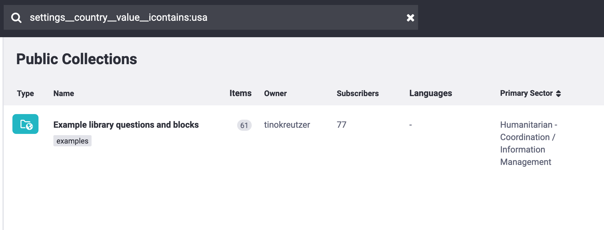

What do you need help with?
Search the knowledge base, browse our resources and visit our forum for more detail information
Search the knowledge base, browse our resources and visit our forum for more detail information
Please note that the search capability is a work in progress, and we plan to add a more user-friendly syntax in future releases.
When you enter a term into the search bar without specifying a field, your query will return results where that term, regardless of capitalization, can be found in:
The name of the survey, collection, question, block, or template;
The owner’s username;
The description;
The summary, which contains all question labels and languages;
The name of any assigned tag;
The object’s UID.
For example, a default search with the term: “examples”, will result in the following:
name__icontains:examples OR owner__username__icontains:examples OR
settings__description__icontains:examples OR summary__icontains:examples OR
tags__name__icontains:examples OR uid__icontains:examples

The field operator is the value after the last double-underscore in the search
field, i.e. __icontains.
For case-sensitive text searches, the following operators can be used:
contains, exact, startswith
For case-insensitive text searches: icontains, iexact,
istartswith
For numeric search, the following operators are valid: exact, lt,
lte, gt, gte
Note that by default the exact operator is set, therefore name:foo is
equivalent to name__exact:foo
The double underscore syntax mimics the behaviour of Django’s object filtering syntax and it allows one to traverse related object relationships and JSON hierarchies, such as those seen at the endpoint:
https://kf.kobotoolbox.org/api/v2/assets/
For example, if an asset has the following settings:
{
...
"settings": {
...
"country": {
"label": "United States",
"value": "USA"
}
...
},
...
}
The object could be searched through the following methods:
settings__country__value:USA

Or more loosely:
settings__country__value__icontains:usa

Finally, the search fields described above can be combined using the query parser syntax for more refined searches. For example:
owner__username__icontains:foo AND tags__name__icontains:bar
Or:
owner__username__icontains:foo AND NOT tags__name__icontains:bar

Did you find what you were looking for? Was the information clear? Was anything missing?
Share your feedback to help us improve this article!